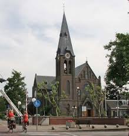

De Sint-Antoniuskerk
De Sint-Antoniuskerk is een markant herkenningspunt in het centrum van Den Hoorn. Deze historische kerk combineert prachtige architectuur met een rustieke uitstraling en vormt al decennia het hart van de lokale gemeenschap.
Midden-Delfland, Zuid-Holland
De Sint-Antoniuskerk is een markant herkenningspunt in het centrum van Den Hoorn. Deze historische kerk combineert prachtige architectuur met een rustieke uitstraling en vormt al decennia het hart van de lokale gemeenschap.

Net buiten de dorpskern van Den Hoorn wandel je zo de uitgestrekte polders van Midden-Delfland in. Dit gebied is perfect voor recreanten die willen genieten van knotwilgen, weidevogels en historische vaarwegen.